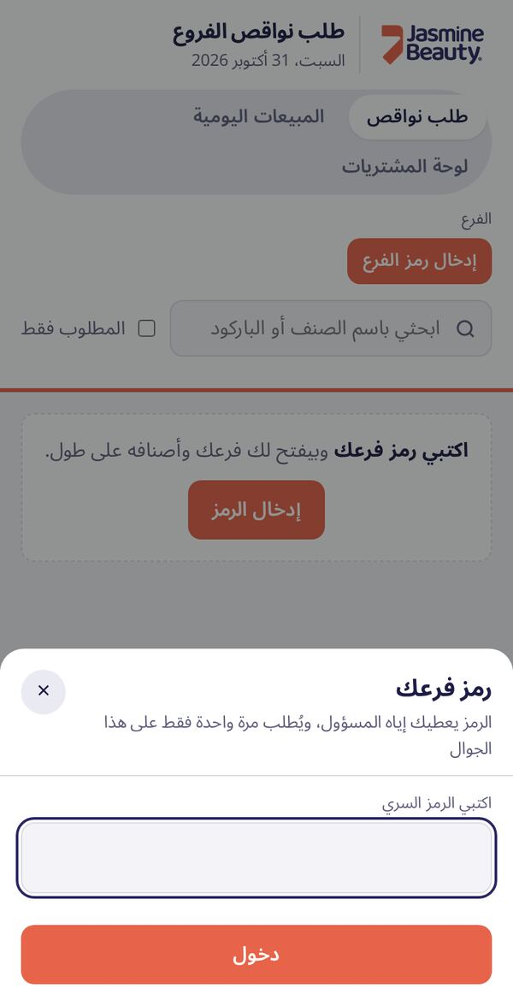
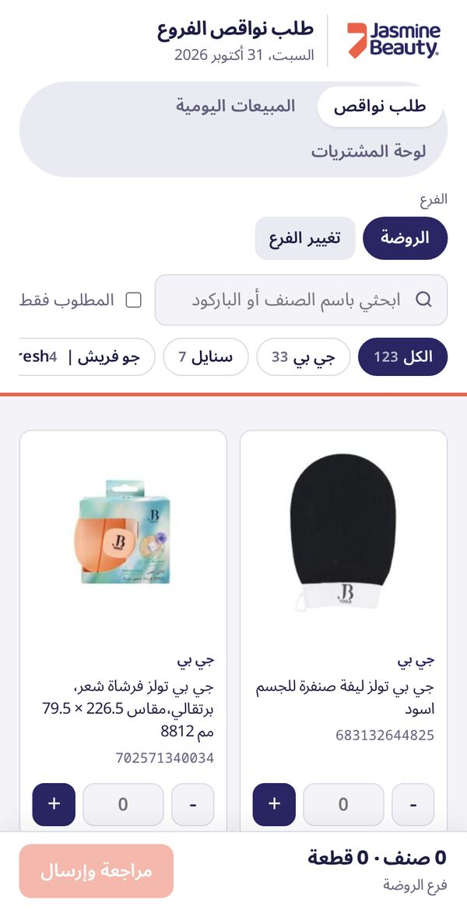
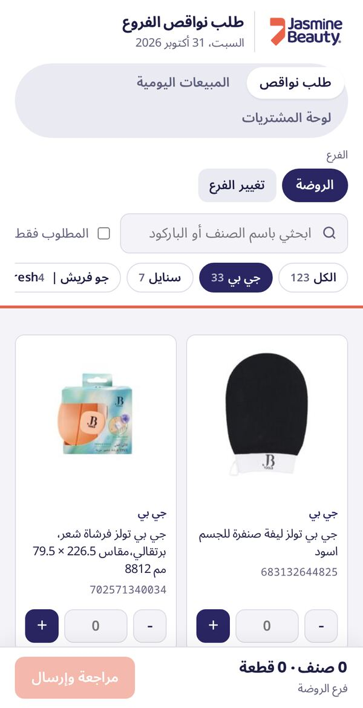
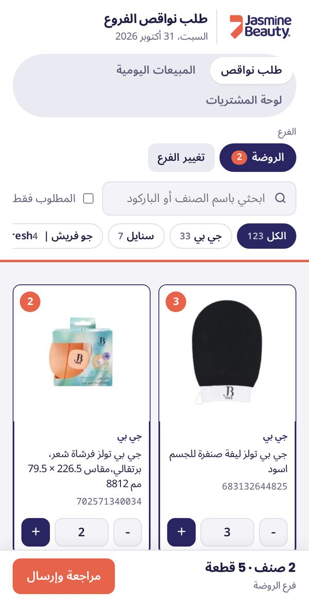
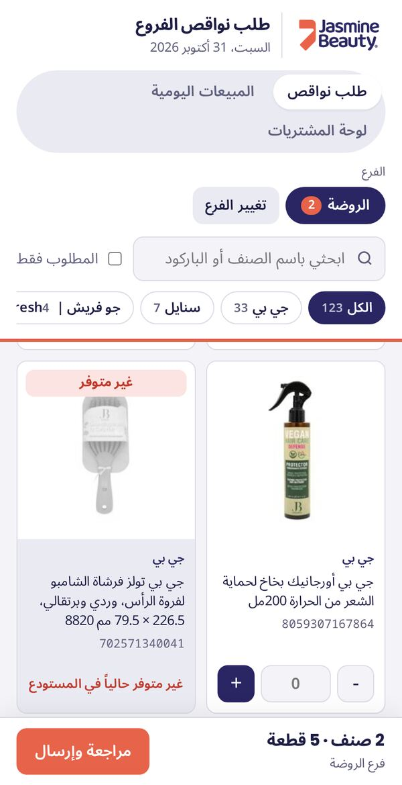
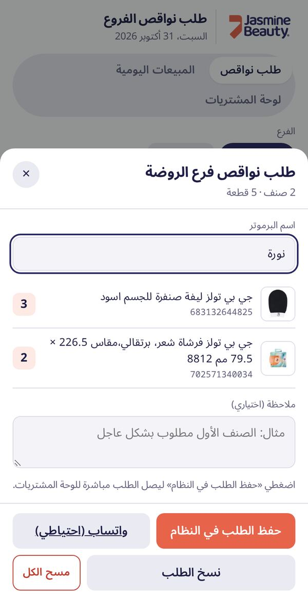
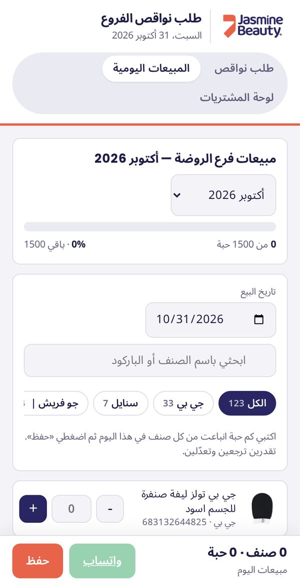
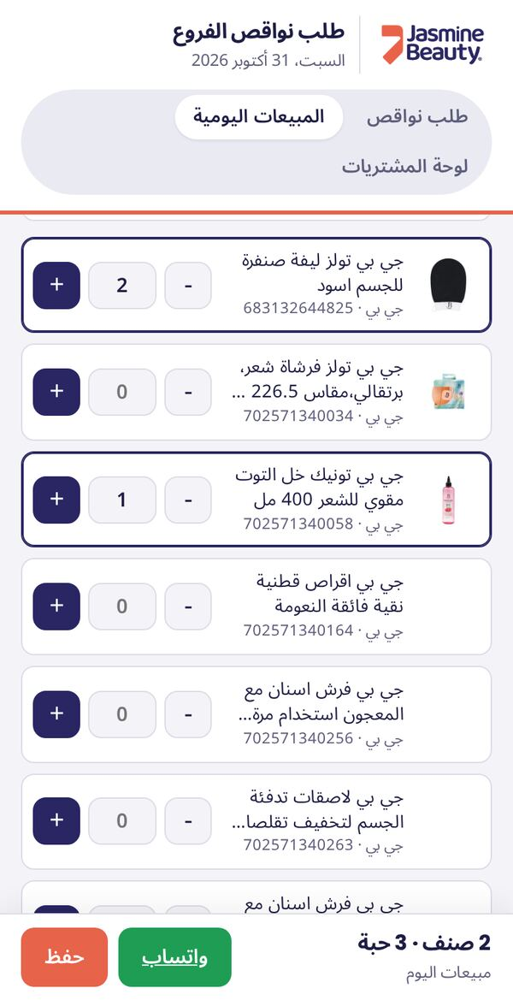

أولًا: طلب النواقص
تطلبين فيه الأصناف الناقصة في فرعك، ويوصل الطلب مباشرة لقسم المشتريات.
1اكتبي رمز فرعك
افتحي الرابط، اضغطي «إدخال الرمز»، واكتبي الرمز اللي أعطاك إياه المسؤول ثم «دخول». الرمز ينطلب مرة وحدة بس على نفس الجوال.

2يفتح فرعك وأصنافه
بيظهر اسم فرعك فوق، وتحته كل الأصناف المطلوبة لفرعك بالصور والباركود. تقدرين تبحثين باسم الصنف أو الباركود.

3اختاري البراند
الأزرار اللي فوق الأصناف («الكل»، «جي بي»، «سنايل»...) تعرض أصناف براند واحد بس. اسحبيها يمين ويسار تشوفين باقي البراندات.

4حطي الكمية المطلوبة
اضغطي + على كل صنف ناقص لين توصلين للكمية اللي تبينها (أو اكتبي الرقم). الرقم البرتقالي على الصورة يوضح الكمية، والشريط تحت يوضح كم صنف وكم قطعة.

5الأصناف «غير متوفر»
الصنف الرمادي المكتوب عليه «غير متوفر» ما هو موجود حاليًا في المستودع، فما ينطلب. أول ما يتوفر بيرجع طبيعي.

6راجعي واحفظي الطلب
اضغطي «مراجعة وإرسال»، اكتبي اسمك، وتأكدي من الأصناف والكميات، وتقدرين تكتبين ملاحظة. بعدها اضغطي «حفظ الطلب في النظام» — وكذا الطلب وصل للمشتريات.

ثانيًا: المبيعات اليومية
كل يوم تسجلين كم حبة انباعت من كل صنف في فرعك.
1افتحي تبويب «المبيعات اليومية»
من فوق اضغطي «المبيعات اليومية». بيظهر لك تارجت الشهر (كم بعتي من أصل التارجت وكم باقي)، وتحته تاريخ اليوم.

2اكتبي كم انباع واحفظي
تأكدي إن التاريخ صحيح، ثم اضغطي + على كل صنف انباع بعدد الحبات (تقدرين تستخدمين البحث وأزرار البراند). في الأخير اضغطي «حفظ».
